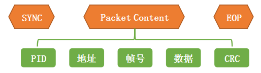
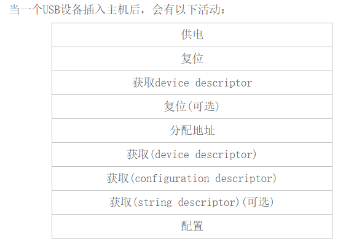

USB相关
USB分层
信号层
1.设备速度的检测
2.信号的编码
协议层
包是USB系统中信息传输的基本单位，所有的数据都是经过打包后再总线上传输的。
每个包由6部分组成：同步字段(SYNC)、包标识符(PID)、地址字段(ADDR)、数据字段(DATA，包括帧号)、检验字段(CRC)、包结束(EOP)。

数据传输层
USB提供4种传输方式
控制传输(control transfers):突发，非周期性，由主机发起，用于命令和状态的传输
同步传输(isochronous transfers):周期性，持续性的传输，用于传输与时效相关的信息，并且在数据中保存时间戳的信息
中断传输(interrput transfers):周期性，低频率，允许有限延迟的通信
大容量数据传输(bulk transfers):非周期性，大容量突发数据的通信，数据可以占用任意带宽，并容忍延迟
USB枚举过程

USB HID通信
USB报告描述符是HID设备的一个描述符，USB HID设备通过报告来传输数据，报告有输入报告和输出报告，输入报告是USB设备发送给主机的，输出报告是主机发送给USB设备的，报告是一个数据包，输入报告是通过中断输入端点输入的，而输出报告有点区别，当没有中断输出端点时，可以通过控制输出端点0 发送，当有中断输出端点时，通过中断输出端点发出。
主机使用获取报告描述符命令来获取报告描述符，一个报告描述符可以描述多个报告，不同的报告通过报告ID 来识别，报告ID 在报告最前面，即第一个字节。当报告描述符中没有规定报告ID 时，报告中就没有ID 字段，开始就是数据。